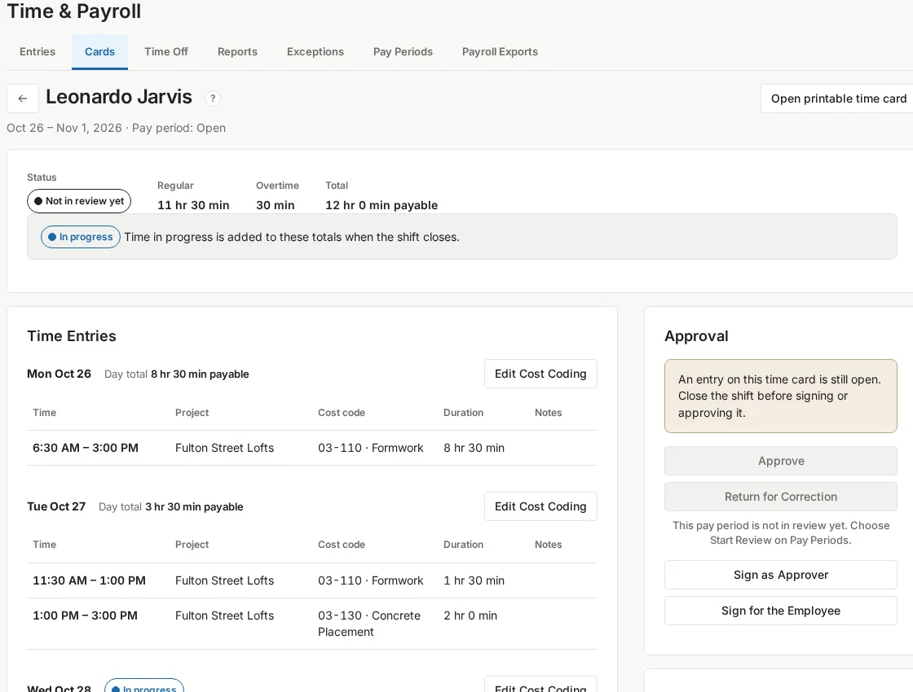

01 / TIMETime cards and
Time cards and
payroll exports.
Employees clock time to a project and cost code, check their cards and request corrections. Reviewers approve or return cards, resolve exceptions and close the period for payroll export.
- Online clock-in/out, breaks and work-allocation changes
- Individual and bulk time-card approval, returns and corrections
- Period readiness, locking and mapped payroll CSV exports
Payroll handoff uses files. Z-Suite does not issue wages, make direct deposits or file payroll taxes.
